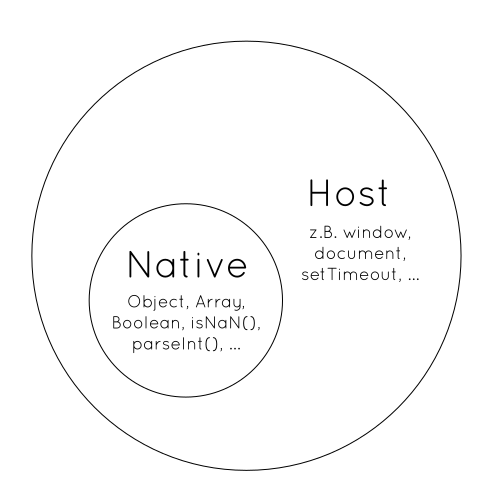

name: cover background-image: url(../assets/img/background.png) # Einführung .slide-cover[ Webentwicklung mit Node.js<br> WS 2015/2016<br> HS Augsburg Michael Jaser<br> ] --- layout: true class: center, middle .slide-header-left[ Einführung ] .slide-header-right[ Node.js WS 15/16 HSA ] --- # Agenda - Über uns - Organisatorisches - JavaScript - Node.js --- # Über uns --- Michael Jaser<br> Wirtschaftsinformatik BSc --- Paul Torka<br> Wirtschaftsinformatik BSc --- <img src="../assets/img/peerigon.svg" width="250" /> Peerigon Team --- # Was machen wir sonst so? --- <br> - Plattform zur WG-Verwaltung - Projektarbeit über 2 Semester - siebenköpfiges Team aus WI/IAM --- --- > Peerigon hilft dir und deinen Freunden, Freizeitprojekte gemeinsam auf die Beine zu stellen. --- - Mobile-App - Pure JavaScript, HTML & CSS - Backend mit Node.js - Datenschutz! - Werbefreiheit! Mehr auf [peerigon.com](https://peerigon.com) --- ## Förderungen für Existenzgründer - [Exist-Stipendium](https://www.exist.de/) - [Flügge-Stipendium](http://www.fluegge-bayern.de/) --- <img src="../assets/img/peerigon.svg" width="350" /> >A small Bavarian collective, striving to push the envelope in the development of digital experiences. Our shared passion is JavaScript. --- # Organisatorisches --- ## Teilnehmerliste --- ## Ablauf - Theorie gepaart mit vielen Übungen - Katas - Workshops - Projektarbeit --- ## Projektarbeit - 2er-Teams - freie Themenwahl - parallel zur Vorlesung - wird benotet (Prüfungsleistung) - Zeitraum ~8 Wochen - Abgabe der Projektarbeit via [GitHub](https://github.com/) --- # Fangen wir an! --- # Node.js = JavaScript - Node.js ist serverseitiges JavaScript - JavaScript Skills sind A und O! --- # Die gute Nachricht:<br>JavaScript ist leicht zu lernen. --- # Die schlechte Nachricht:<br>JavaScript ist schwer zu verstehen. --- # Kleiner Rückblick --- - wurde 1995 unter dem Namen LiveScript von Netscape entwickelt - bald darauf aus Marketinggründen in JavaScript umbenannt - 1996 von Microsoft unter dem Namen JScript adoptiert - wird seit Ende 1996 unter dem Namen [ECMAScript](http://es5.github.io/) standardisiert --- # JavaScript ist einfach, weil... - vertraute, Java-ähnliche Syntax - funktioniert out-of-the-box - copy & paste - dynamische Typisierung --- # JavaScript ist schwer, weil... - verwirrende Datentypen - unintuitive Prototypen-Vererbung - historisch gewachsene APIs (DOM) - viele verschiedene JS-Engines --- Doch das größte Problem ist... --- > Java and JavaScript are similar like Car and Carpet are similar. <cite>Someone on the internet</cite> --- | Java | JavaScript | |-------------------| | Kompiliert | Interpretiert | | Statische Typisierung | Dynamische Typisierung | | Klassen-Vererbung | Prototypen-Vererbung | --- Wo wird JavaScript heute hauptsächlich ausgeführt? --- <img src="../assets/img/browsers-logos.png" style="height: 20vh"> --- # Browser  --- # Browser ## Native ist als ECMAScript standartisiert ## Host beinhaltet z.B. das DOM, welches von der W3C spezifiziert wird --- # Bekannte JavaScript-Engines | Name | Hosts | |-------------------| | SpiderMonkey | <img src="../assets/img/firefox-logo.png" style="height: 1em; margin-bottom: -0.2em"> | | v8 | | | Chakra | <img src="../assets/img/ie-logo.png" style="height: 1em; margin-bottom: -0.2em"> | | Nitro | <img src="../assets/img/safari-logo.png" style="height: 1em; margin-bottom: -0.2em"> | <cite>http://en.wikipedia.org/wiki/List_of_ECMAScript_engines</cite> --- --- # Node.js - wurde 2009 veröffentlicht von Ryan Dahl - seit 2015 verwaltet von der Node.js Foundation - basiert auf der V8 JavaScript Engine - ist OpenSource: MIT --- # Architektur --- - __V8__ JavaScript Engine - __libuv__ OS-Abstraktionsschicht für IO - __bindings__ Glue-Code zwischen C/C++ und JavaScript - __Core-Modules__ Node.js Standard Bibliothek mit Funktionen die JS nicht mitbringt wie _fs, process, http_ --- # Node.js Philosophie --- # Small Core - nur sehr wenige Module in der Standard Bibliothek - __Ziel:__ einen Großteil der Community überlassen - schnelle Iterationen - Freiheit und Flexibilität für die Community - "Konkurrenz belebt das Geschäft" --- # Small Modules angelehnt an die UNIX Philosophie - "Small is beautiful." - "Make each program do one thing well." --- # Small surface area - minimale durchdachte APIs - optimiert auf ein Use-Case --- # Simplicity and pragmatism >"Simplicity is the ultimate sophistication" (Leonardo Da Vinci) - Keep It Simple, Stupid (KISS) - pragmatische Ansätze --- # Was ist io.js? <img src="../assets/img/iojs.png" style="width:50%"> --- # io.js - die Community war unzufrieden mit... - der Geschwindigkeit der Entwicklung - dem Management durch Joyent - es kam zu einem Fork namens _io.js_ - Community managed - häufige Releases nach _semver_ - aktuelle V8 als Basis --- # Node.js -> io.js -> Node.js - io.js und Node.js wurden wieder gemerged - Version 4.0.0 war der initiale Release - Node.js wird fortan von der Node.js Foundation gemanaged - Es gibt sehr viele Arbeitsgruppen über die man sich einbringen kann --- # Übung: Hello World via Browser (Console) --- # Übung: Hello World via Node.js